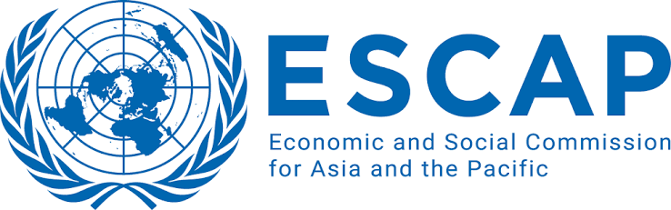

About Me
i. Work as Researcher at the Health Intervention and Technology Assessment Program Foundation (HITAP), Thailand.
ii. My work combines Climate-Health-Economic modelling, and use of GIS approaches to generate evidence for health, environmental, and economic policy.
My Projects
01
Economic Impacts of the Fossil Fuel–to–Renewable Energy Transition Using Computable General Equilibrium and Integrated Assessment Models
View Repository →
02
Climate Change Impacts on Healthcare Utilization and Health Systems
View Repository →
03
Microplastic Exposure, Health Impacts, and Economic Evaluation
View Repository →
04
Climate, Health and Demographic Nexus
View Repository →
05
CarbonQuest: Understanding Individual-Level Carbon Footprints Through a Gamification-Based Application
View Repository →
06
Indoor Air Quality Assessment in Office Buildings in Thailand
View Repository →
07
Low-Value Care: Appendicitis Surgery During the COVID-19 Pandemic
View Repository →
08
Tourism, Climate Change, and Disaster Management
View Repository →
Education
Doctor of Philosophy (Ph.D.) Program in Development and Sustainability
- Course overview: Urban Environmental Management Systems; Climate Compatible and Sustainable Infrastructure Development; Development Economics; Forestry and REDD+
- PhD Dissertation Title: Identifying Hazards and Developing Resilience for Sustainable Urban Tourism: A Case Study of Pokhara, Nepal
Master of Science in Population, Gender and Development, Pokhara University, Nepal
Bachelors in Development Studies, Pokhara University, Nepal
Work Experience
Health Intervention and Technology Assessment Program Foundation
Principal Investigator (PI)
- Climate Change Impact on Healthcare Utilization and Health Systems
- Climate, Health and Demographic Nexus
- Economic Impact of Fossil Fuel to Renewable Energy Transition using CGE and Integrated Assessment Models
- Exposure to Microplastic, Health Impact and Economic Evaluation
- Low-Value Care: Appendicitis Surgery During COVID-19
Co-Principal Investigator (Co-PI)
- Indoor Air Quality Assessment of Official Buildings in Thailand
- CarbonQuest: Understanding Individual-Level Carbon Footprint via Gaming Application
Additional Responsibilities
- Contribute to and secure multi-source research funding, including Thailand Science Research and Innovation (TSRI) and the Wellcome Trust.
- Design and deliver research methods and statistical training.
- Develop domestic and international research partnerships focused on carbon, climate-health research, and policy integration.
Board Member
- Serve as an advisory board member of a climate-sensitive infectious disease network.
Asian Institute of Technology (AIT)
- Teaching Assistant: Taught Quantitative Research Methods to 50+ MSc/PhD students; achieved 100% pass rates and doubled average exam scores since 2021. Guided 100+ graduate students in data analysis and academic writing.
- Research Assistant: Ran complex projects with 200+ variables for the Living Delta Hub Project.
- Student Assistant: Co-developed MSc programs in Urban Development & Sustainability; created two EbA frameworks for National University of Laos; contributed to UNEP climate finance deliverables.

United Nations Economic and Social Commission for Asia and the Pacific (ESCAP)
- Contributed to Beijing+30 synthesis across five thematic areas, informing regional policy.
- Supported the Seventh Asian & Pacific Population Conference involving 54 member states; coordinated logistics and cross-cultural communications.
- Facilitated the Working Group on the Asian & Pacific Decade of Persons with Disabilities.
Government of Nepal (GON), Pokhara Metropolitan City Office
- Implemented and maintained a comprehensive database for 650 street children and 10,000+ elderly pension recipients.
- Coordinated with 80+ civil society organizations (CSOs) to establish youth forums and ad hoc working groups.
- Collaborated directly with the Municipality Mayor and 33 ward members to institutionalize the Child-Friendly Local Governance (CFLG) program.
- Designed and executed innovative fundraising strategies, including a strategic partnership with UNICEF Nepal, securing USD 10,000.
Honors & Awards
PhD Fellowship
University Grants Commission (UGC), Nepal | August 2022
Asian Institute of Technology PhD Scholarship
Asian Institute of Technology | August 2020
Dean's List Award
Pokhara University | August 2019 & September 2016
Japan Student Services Organization (JASSO) Exchange Scholarship
Kumamoto University, Japan